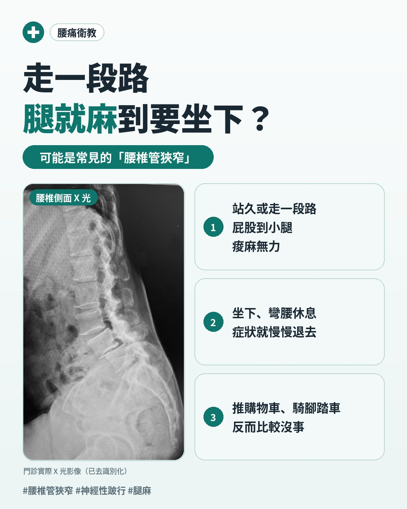
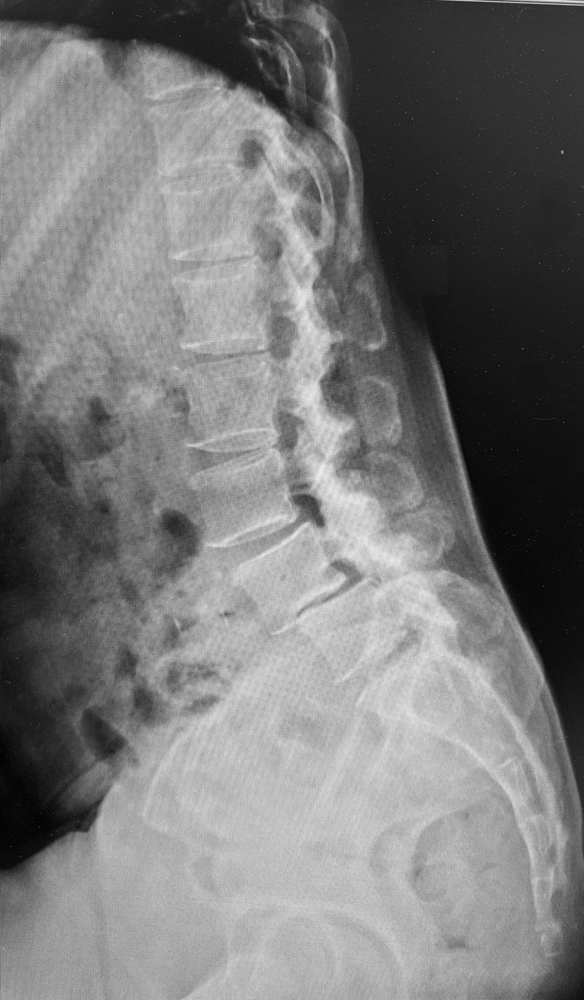

走一段路就腿麻、要蹲下來休息？認識腰椎管狹窄
「醫師，我走到菜市場一半，腿就開始麻、開始沉，一定要找張椅子坐一下。奇怪的是，坐個兩三分鐘，又可以繼續走。」
說這段話的是一位七十歲的阿伯，我們叫他阿財伯。他說自己年輕時搬貨搬了三十年，腰痠是家常便飯，但這兩年多了一個新毛病——走路走不遠。更讓他困惑的是：推著菜籃車逛賣場，反而可以走得比較久；騎腳踏車去公園，一點事也沒有。
這種「走一段就要停下來、彎腰或坐下休息就會好」的狀況，在門診很常見，背後最常見的原因之一，就是腰椎管狹窄（Lumbar Spinal Stenosis, LSS）。

一、腰椎管狹窄是什麼？
脊椎中間有一條讓神經通過的「隧道」，叫做椎管（spinal canal）；兩側還有讓神經根分出去的「小門」，叫做神經孔（neural foramen）。腰椎管狹窄，就是這條隧道或這些小門變窄了，裡面的神經被擠壓。
隧道為什麼會變窄？大多不是單一原因，而是幾種退化變化疊加在一起：
- 椎間盤膨出：椎間盤水分流失、變扁，往後鼓起
- 黃韌帶增厚（ligamentum flavum hypertrophy）：椎管後方的韌帶變厚、變硬，從後面擠進來
- 小面關節肥厚與骨刺：關節長期磨損，長出多餘的骨頭
- 退化性腰椎滑脫（degenerative spondylolisthesis）：上下兩節椎體錯位，隧道被「錯開」，最常發生在第四、第五腰椎（L4-5）——滑脫的分類與成因，可以參考〈臨床指南：脊椎滑脫症的機轉、分類、臨床表現與治療策略〉
可以想像一條老舊的地下道：地板隆起一塊、天花板垂下一塊、兩側牆壁又往內膨——每一項單獨看都不嚴重，合在一起，通道就只剩下一半。
所以腰椎管狹窄多半發生在五十歲以後，六十歲以上更常見。也要提醒一點：X 光報告上寫「骨刺」，不等於「有狹窄」，更不等於「症狀就是它造成的」——影像要配合症狀與檢查一起判斷。
二、為什麼走路會麻、彎腰就好？
腰椎管狹窄最典型的症狀，叫做神經性跛行（neurogenic claudication）：站久或走一段路後，臀部、大腿到小腿開始痠、麻、沉、無力，可能一側，也可能兩側；坐下、蹲下或彎腰休息一下，症狀就慢慢退去。
關鍵在於姿勢會改變椎管的大小：
- 站直、後仰時：黃韌帶會縮起來、往椎管內堆積，椎管變得更窄
- 彎腰、坐下時：黃韌帶被拉長、拉平，椎管空間變大，神經也就鬆了口氣
就像一條被壓到的水管，平常水還流得過去；一走路，神經需要更多血液供應，窄的地方就跟不上了——不是管子沒水，是需求一下子變大。
這也解釋了開頭阿財伯的兩個「怪現象」：
- 推購物車走得比較遠：推車時身體自然前傾，就是常被提到的「購物車徵象」（shopping cart sign）
- 騎腳踏車沒事：騎車是彎腰的姿勢，椎管是打開的
三、腿麻不一定是腰椎管狹窄
「走一段就要休息」這個症狀，有幾個常見的「模仿者」，門診時一定要先分清楚。
1. 血管性跛行：需要轉介的情況
周邊動脈疾病（peripheral arterial disease, PAD）是腿部血管狹窄，走路時肌肉缺血，也會走一段就痛。兩者最大的差別在「怎麼休息才會好」：
| 神經性跛行（腰椎管狹窄） | 血管性跛行（周邊動脈疾病） | |
|---|---|---|
| 怎麼休息會好 | 要坐下、蹲下或彎腰 | 停下來站著就會好 |
| 騎腳踏車 | 通常沒事 | 一樣會痛 |
| 上坡、下坡 | 下坡（身體後仰）較容易發作 | 上坡（耗力大）較容易發作 |
| 感覺 | 麻、刺、沉、無力 | 小腿抽緊、痠痛 |
| 其他線索 | 可能合併腰痛 | 腳背脈搏摸不到、皮膚冰冷，常有抽菸、糖尿病史 |
要注意的是，兩者可能同時存在。曾有個案報告描述，一位症狀與 MRI 都像腰椎管狹窄的患者，後來因為脈搏異常進一步檢查，才發現真正的問題在主動脈。所以摸腳背脈搏，是我在門診一定會做的一步；懷疑血管問題，會先轉介心臟血管科評估。
2. 髖關節與臀部的問題
- 髖關節退化：痛在腹股溝、大腿前側，穿襪子、盤腿會痛
- 臀中肌、臀小肌的轉移痛：屁股痠痛延伸到大腿、甚至小腿外側，很像坐骨神經痛，但很多時候問題根本不在腰
- 臀部的神經壓迫點：例如梨狀肌附近的坐骨神經受壓——可以參考〈屁股痛「坐不住、坐立不安」的困擾；別只怪椎間盤，也別忽略深臀區——深臀症候群〉
臨床上常見的是「都有一點」：年紀大了，腰有狹窄，臀部也有緊繃點。這時候要釐清哪個才是主要問題，而不是看到 MRI 有狹窄，就把帳全算在腰上。
3. 下肢支撐變差，腰來代償
有些人腿部手術或受傷後沒有好好復健，那隻腳不太會支撐，身體就改用腰「撐」——站著時腰往後卡，反而壓縮了神經的空間。這類情況只處理腰是不夠的，下肢也要一起訓練。
4. 其他：周邊神經病變
糖尿病等造成的周邊神經病變，麻木多半從腳底、腳趾開始，呈「襪子型」分布，而且和姿勢、走路比較無關。
⚠️ 這些狀況，請立刻就醫
- 大小便失禁，或解不出來
- 會陰、股間（坐椅子會碰到的地方）麻木
- 腿的力氣在幾天到幾週內明顯變差，例如腳板抬不起來、走路拖腳
這可能是馬尾症候群（cauda equina syndrome）或嚴重神經壓迫，需要儘快到急診或脊椎外科評估。
四、門診怎麼評估？
1. 問診
- 走多久、多遠會開始麻？休息的姿勢是坐下、彎腰，還是只要站著停下？
- 一側還是兩側？麻到哪裡？
- 有沒有前面提到的紅旗症狀？有沒有下肢手術、受傷史？
2. 理學與神經學檢查
- 神經學檢查：肌力、反射、感覺，確認神經受壓的程度與節段
- 腳背脈搏：初步篩檢血管問題
- 髖關節檢查：活動度、是否誘發腹股溝疼痛
- 動作與功能：這一項常被忽略，但對之後的治療最重要
所謂動作與功能，主要看幾件事：上段腰椎是不是卡住、動不太到；髖關節往後伸時，腰會不會跟著被帶走；挺身的瞬間，是用髖發力，還是全靠腰在「拗」。
一個簡單的例子是橋式（bridge）：躺著屈膝，把屁股抬離床面。很多腰椎管狹窄的患者，屁股抬不太高，或抬到一半就開始用腰拗——臀肌在「裝死」，腰只好多做一份工。
3. 影像：什麼時候需要 MRI？
- X 光：可以看滑脫、椎間盤高度與骨刺；前彎、後仰的動態 X 光可以看滑脫穩不穩定
- MRI：可以直接看到椎管與神經受壓的程度。通常在以下情況安排：症狀持續、保守治療一段時間仍沒有進展、對診斷有疑慮，或準備討論手術時

影像上的狹窄程度，和症狀的嚴重程度不一定成正比。所以影像是用來「印證」臨床判斷，不是取代它。
4. 超音波能做什麼、不能做什麼
超音波看不到椎管裡面，所以不能用來診斷腰椎管狹窄。但它可以評估腰部周圍的肌肉、筋膜與小面關節周圍的軟組織，也可以檢查臀部的神經壓迫點——也就是幫忙區分前面提到的「模仿者」，並在需要時導引治療。
五、保守治療有哪些選擇？
沒有紅旗症狀的腰椎管狹窄，多半可以先從保守治療開始。有系統性回顧分析五篇隨機對照試驗（共 643 位患者），比較手術與非手術治療，結論是目前證據還不足以說哪一個明確比較好；但手術組的併發症比例約 10% 到 24%，保守治療則沒有報告副作用。這就成了我在臨床上的判斷原則：只要神經功能沒有持續退步，先把保守治療做好、做完整。
治療原則：不是把骨頭推回去
許多病人聽到「狹窄」、「滑脫」，第一個問題是：「可以把它推回去嗎？」退化造成的結構改變，保守治療很難逆轉。但症狀和功能，是有機會改善的。所以保守治療的重點是：
- 改善「一直讓它變嚴重」的問題：不是逆轉狹窄或滑脫，而是讓症狀停在這裡、不再惡化
- 先放鬆上段腰椎、創造活動度：狹窄多在下段（L4-5、L5-S1），上段動得開，就能減少下段在伸直時需要的角度
- 訓練髖關節活動度與肌力：讓挺腰的瞬間，改由髖關節發力
- 增加核心穩定、誘發臀肌：讓「裝死」的臀肌重新上工
用一個比喻：一間公司裡，最下段那位員工（L4-5）已經累到快撐不住了，治療不是逼著他繼續加班，而是讓上段腰椎、髖關節、臀肌這些同事，把該分的工作接回去。
1. 運動處方
- 以前彎為主的動作：抱膝、輕度的骨盆後傾，幫助打開椎管空間
- 騎固定式腳踏車：彎腰姿勢下的有氧運動，多半不會誘發症狀
- 分段走路：在症狀出現前就先休息，再慢慢拉長每一段的距離
- 臀肌與核心訓練：從橋式開始，臀肌為什麼會「裝死」、怎麼喚醒，可以參考〈每天腰酸背痛？可能你的屁股已經「裝死」了！〉；核心訓練的進階安排，可以參考〈腰椎椎間盤突出：整合針刀、乾針、中藥到核心訓練〉
還有一個常見的迷思：「醫師說我不能後仰，所以我什麼都不敢動。」 實際上，狹窄或滑脫的那一節確實不適合過度伸展；但我們可以做挺胸、伸髖的練習，把活動空間分給胸椎和髖關節。身體其他地方動得越多，那一節就越不用硬撐。
2. 和物理治療師分工合作
運動訓練有沒有人帶，差很多。曾有一項隨機對照試驗追蹤 86 位腰椎管狹窄患者一年：由物理治療師帶領訓練的那一組，症狀達到臨床上有意義改善的比例約 60.5%，只拿居家運動單張回家做的約 32.6%；一年內接受手術的比例，也從 23.3% 降到 7.0%。
所以我很重視和物理治療師的分工。一個典型的物理治療療程，大致會是：
- 放鬆與活動度：先處理上段腰椎、髖關節的僵硬
- 神經症狀的處理：有腿麻等神經症狀時，依狀況加入對應的處置
- 動作訓練：調整動作模式，教髖關節與臀肌的運動，帶回家繼續練
物理治療師的價值，是讓病人有更好的功能去活動；我這邊則負責診斷、鑑別，以及處理那些「卡得太緊、練不開」的地方。
3. 乾針、浮針、電針
腰椎管狹窄的患者，常因為長期代償，豎脊肌、腰方肌、臀中肌、臀小肌緊繃成一塊一塊。乾針（dry needling）與浮針可以處理這些緊繃點；有下肢神經症狀的人，也會搭配局部與小腿的電針，希望重新喚醒肌肉的控制。
4. 超音波導引針刀
如果評估發現上段腰椎特別卡，或某些軟組織沾黏、硬到乾針「不買單」，可以在超音波導引下用針刀（acupotomy），在小面關節囊旁、橫突旁與豎脊肌做精準的鬆解。針刀的角色是「開路」：把練不開的地方鬆開，後續運動訓練才練得進去，不是用來取代訓練。
5. 中藥調養
中醫看腰椎退化，常從肝腎不足、氣血不暢的角度處理，會依個人體質搭配中藥，作為整體調養的一環。
6. 治療前須知
- 牽引、減壓不是人人適合：滑脫程度較高、本身已不穩定的人，牽引後症狀可能反而更明顯，需要由治療者評估後決定
- 針刀、乾針屬於侵入性治療，可能有痠痛、瘀青、感染等風險；服用抗凝血劑、凝血功能異常者需先告知醫師
- 退化不是一次治療就能解決的，居家運動要持續做
六、什麼時候該討論手術？
選擇保守治療，不代表「一定不開刀」。以下情況，我會建議和骨科或神經外科討論手術：
- 出現馬尾症候群：大小便失控、會陰麻木（這是急症）
- 肌力明顯且持續退步
- 認真做了約三到六個月的保守治療，走路距離仍然很短，已經影響日常生活
也有一些人，外科已建議手術，但自己還沒有準備好。如果神經功能已經受損，恢復通常比較慢，保守治療能做到哪裡也比較不確定。這時候我會很直白地說明這個風險，並定期追蹤肌力；一旦有退步，就應該回到外科重新評估。
手術和保守治療不是對立的選項，而是不同階段的工具——重點是醫病一起權衡利弊，而不是「拖到不能再拖」。
七、重點結論
- 走一段路就腿麻，坐下或彎腰休息就好轉，是腰椎管狹窄的典型表現
- 腿麻不一定來自腰：血管問題、髖關節、臀部肌肉與神經都要一起考慮
- 大小便失控、會陰麻木、肌力快速退步，要立刻就醫
- 保守治療的目標不是把骨頭推回去，而是讓症狀穩定、功能變好
- 讓上段腰椎、髖關節與臀肌分擔工作，下段腰椎才不用一個人硬撐
狹窄的是通道，不是你的生活。讓其他關節動起來，路就能走得更遠。
本文僅供醫療衛生教育參考，不能取代醫師的診斷與治療。每個人的病情、體質與治療反應不同，文中提及的治療方式並非適用於所有人，亦不保證療效；侵入性治療可能伴隨副作用與風險。如有身體不適，請尋求合格醫療專業人員當面評估。
參考文獻
- Kreiner DS, et al. An evidence-based clinical guideline for the diagnosis and treatment of degenerative lumbar spinal stenosis (update). Spine J. 2013;13(7):734-743. doi:10.1016/j.spinee.2012.11.059
- Zaina F, Tomkins-Lane C, Carragee E, Negrini S. Surgical versus non-surgical treatment for lumbar spinal stenosis. Cochrane Database Syst Rev. 2016;2016(1):CD010264. doi:10.1002/14651858.CD010264.pub2
- Minetama M, et al. Supervised physical therapy versus unsupervised exercise for patients with lumbar spinal stenosis: 1-year follow-up of a randomized controlled trial. Clin Rehabil. 2021;35(7):964-975. doi:10.1177/0269215520986688
- Lakdawala RH, et al. Aortic flap valve presenting as neurogenic claudication: a case report. Spine. 2004;29(4):E79-81. doi:10.1097/01.brs.0000109763.77854.9b